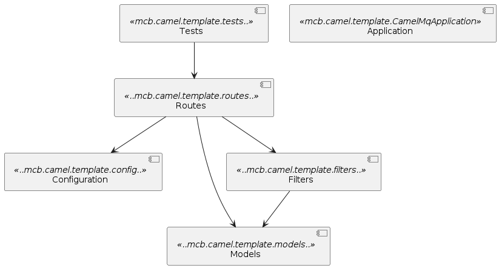

<!DOCTYPE html>


<html lang="en">
  

    <head>
      <meta charset="utf-8" />
       
      <meta name="keywords" content="agile, tdd, software engineering" />
       
      <meta
        name="viewport"
        content="width=device-width, initial-scale=1, maximum-scale=1"
      />
      
        <meta property="og:image" content="test-arch2.png"/>
        <meta property="og:description" content="In this post I&#39;m discussing how to test software designs using ArchUnit as well as why you might want to in the first place."/>
        
      <title>Testable Architecture with ArchUnit |  nick dot blog</title>
  <meta name="generator" content="hexo-theme-ayer">
      
      <link rel="shortcut icon" href="/favicon.ico" />
       
<link rel="stylesheet" href="/dist/main.css">

      
<link rel="stylesheet" href="/css/fonts/remixicon.css">

      
<link rel="stylesheet" href="/css/custom.css">
 
      <script src="https://cdn.staticfile.org/pace/1.2.4/pace.min.js"></script>
       
<!-- Global site tag (gtag.js) - Google Analytics -->
<script async src="https://www.googletagmanager.com/gtag/js?id=G-KXJW9BVBJ4"></script>
<script>
  window.dataLayer = window.dataLayer || [];
  function gtag(){dataLayer.push(arguments);}
  gtag('js', new Date());
  gtag('config', 'G-KXJW9BVBJ4');
</script>

 

      <link
        rel="stylesheet"
        href="https://cdn.jsdelivr.net/npm/@sweetalert2/theme-bulma@5.0.1/bulma.min.css"
      />
      <script src="https://cdn.jsdelivr.net/npm/sweetalert2@11.0.19/dist/sweetalert2.min.js"></script>

      <!-- mermaid -->
      
      <style>
        .swal2-styled.swal2-confirm {
          font-size: 1.6rem;
        }
      </style>
    <link rel="alternate" href="/atom.xml" title="nick dot blog" type="application/atom+xml">
</head>
  </html>
</html>


<body>
  <div id="app">
    
      
    <main class="content on">
      <section class="outer">
  <article
  id="post-testing-architecture"
  class="article article-type-post"
  itemscope
  itemprop="blogPost"
  data-scroll-reveal
>
  <div class="article-inner">
    
    <header class="article-header">
       
<h1 class="article-title sea-center" style="border-left:0" itemprop="name">
  Testable Architecture with ArchUnit
</h1>
 

      
    </header>
     
    <div class="article-meta">
      <a href="/2023/10/27/testing-architecture/" class="article-date">
  <time datetime="2023-10-27T06:27:17.000Z" itemprop="datePublished">2023-10-27</time>
</a>   
<div class="word_count">
    <span class="post-time">
        <span class="post-meta-item-icon">
            <i class="ri-quill-pen-line"></i>
            <span class="post-meta-item-text"> Word count:</span>
            <span class="post-count">967</span>
        </span>
    </span>

    <span class="post-time">
        &nbsp; | &nbsp;
        <span class="post-meta-item-icon">
            <i class="ri-book-open-line"></i>
            <span class="post-meta-item-text"> Reading time≈</span>
            <span class="post-count">6 min</span>
        </span>
    </span>
</div>
 
    </div>
      
    <div class="tocbot"></div>


  
    <div class="article-entry" itemprop="articleBody">
       
  <p>In the ever-evolving landscape of software development, maintaining a well-structured and resilient codebase is paramount. <a target="_blank" rel="noopener" href="https://www.archunit.org/">ArchUnit</a> is a framework that allows you to test your design using unit tests. Each aspect of the design can be expressed as unit tests or even derived from a UML diagram. The application is then tested to see if its structure conforms to the specified design.</p>
<p>ArchUnit empowers developers and architects to impose strict rules governing various aspects of software architecture. These rules encompass package dependencies, class dependencies, containment, inheritance checks, annotations, layering, and the prevention of circular call dependencies. But before diving into the details of how ArchUnit works, it’s essential to explore why it is crucial in the first place.</p>
<h1 id="Why-Architectural-Testing-Matters"><a href="#Why-Architectural-Testing-Matters" class="headerlink" title="Why Architectural Testing Matters"></a>Why Architectural Testing Matters</h1><p>Misunderstandings in design documents and whiteboard diagrams are not uncommon, and their consequences can vary from glaring errors to subtle deviations that take time to surface. By documenting your design using ArchUnit and subjecting your code to these tests, you ensure that your codebase aligns precisely with your architectural vision.</p>
<p>Architectural testing acts as an early warning system, instantly detecting any changes that violate your design. For instance, consider a scenario where a new team member accidentally bypasses the Data Layer, disables security on a controller, or introduces an unintended dependency. Many teams heavily rely on code reviews to identify such issues, but this approach can delay feedback and potentially lead to significant rework. In contrast, architecture testing serves as an immediate safeguard, allowing code reviews to focus on higher-level concerns.</p>
<blockquote>
<p>Embarrassing anecdote -&gt; I once accidentally disabled security on one of my applications because I removed the security attribute from the controller whilst debugging and forgot to put it back. A simple ArchUnit test would have immediately spotted my error.</p>
</blockquote>
<p>Software is inherently dynamic, and designs seldom survive unscathed in the real world. They adapt in response to evolving requirements and a deeper understanding of the problem domain. Architectural testing offers traceability at the source code level, enabling you to understand when and why changes occur. Additionally, it simplifies the assessment of the impact of modifications. For example, if you plan to introduce a Facade pattern over multiple classes, you can begin by modifying the architecture tests. This action will provide an inventory of all the classes and references that require adjustment to accommodate the new design.</p>
<h1 id="Implementing-ArchNote"><a href="#Implementing-ArchNote" class="headerlink" title="Implementing ArchNote"></a>Implementing ArchNote</h1><p>I am going to add ArchNote to one of my SpringBoot Camel projects. For now I want to implement a couple of simple rules:</p>
<ul>
<li>I want all of my Routes to be contained in the ‘routes’ package. </li>
<li>I want all of my Routes to inherit from the RouteBuilderBase class.</li>
</ul>
<h2 id="Setup"><a href="#Setup" class="headerlink" title="Setup"></a>Setup</h2><p>Start by adding the ArchUnit dependency. </p>
<figure class="highlight plaintext"><table><tr><td class="gutter"><pre><span class="line">1</span><br></pre></td><td class="code"><pre><span class="line">testImplementation &#x27;com.tngtech.archunit:archunit-junit5:1.1.0&#x27;</span><br></pre></td></tr></table></figure>

<h2 id="Creating-Architecture-Tests"><a href="#Creating-Architecture-Tests" class="headerlink" title="Creating Architecture Tests"></a>Creating Architecture Tests</h2><p>Here’s the first test. We import the application’s packages and then create a rule that ensures that all of my Routes are placed in the ‘routes’ package.</p>
<figure class="highlight java"><table><tr><td class="gutter"><pre><span class="line">1</span><br><span class="line">2</span><br><span class="line">3</span><br><span class="line">4</span><br><span class="line">5</span><br><span class="line">6</span><br><span class="line">7</span><br><span class="line">8</span><br><span class="line">9</span><br><span class="line">10</span><br><span class="line">11</span><br><span class="line">12</span><br><span class="line">13</span><br><span class="line">14</span><br></pre></td><td class="code"><pre><span class="line"></span><br><span class="line"><span class="meta">@Test</span></span><br><span class="line"><span class="keyword">void</span> <span class="title function_">EnsureRoutesAreInCorrectPackage</span><span class="params">()</span>&#123;</span><br><span class="line">    <span class="type">JavaClasses</span> <span class="variable">jc</span> <span class="operator">=</span> <span class="keyword">new</span> <span class="title class_">ClassFileImporter</span>()</span><br><span class="line">            .importPackages(<span class="string">&quot;mcb.camel.template&quot;</span>);</span><br><span class="line"></span><br><span class="line">    <span class="type">ArchRule</span> <span class="variable">r1</span> <span class="operator">=</span> classes()</span><br><span class="line">            .that().areAssignableTo(RouteBuilder.class)</span><br><span class="line">            .should()</span><br><span class="line">            .resideInAPackage(<span class="string">&quot;..routes&quot;</span>);</span><br><span class="line"></span><br><span class="line">    r1.check(jc);</span><br><span class="line">&#125;</span><br><span class="line"></span><br></pre></td></tr></table></figure>

<p>The next test ensures that everything in the ‘routes’ package must inherit from RouteBuilderBase. </p>
<figure class="highlight java"><table><tr><td class="gutter"><pre><span class="line">1</span><br><span class="line">2</span><br><span class="line">3</span><br><span class="line">4</span><br><span class="line">5</span><br><span class="line">6</span><br><span class="line">7</span><br><span class="line">8</span><br><span class="line">9</span><br><span class="line">10</span><br><span class="line">11</span><br><span class="line">12</span><br></pre></td><td class="code"><pre><span class="line"><span class="meta">@Test</span></span><br><span class="line"><span class="keyword">void</span> <span class="title function_">EnsureRoutesAreInRoutesUseCorrectBase</span><span class="params">()</span>&#123;</span><br><span class="line">    <span class="type">JavaClasses</span> <span class="variable">jc</span> <span class="operator">=</span> <span class="keyword">new</span> <span class="title class_">ClassFileImporter</span>()</span><br><span class="line">            .importPackages(<span class="string">&quot;mcb.camel.template&quot;</span>);</span><br><span class="line"></span><br><span class="line">    <span class="type">ArchRule</span> <span class="variable">r1</span> <span class="operator">=</span> classes()</span><br><span class="line">            .that().resideInAPackage(<span class="string">&quot;..routes..&quot;</span>)</span><br><span class="line">            .should()</span><br><span class="line">            .beAssignableTo(RouteBuilderBase.class);</span><br><span class="line"></span><br><span class="line">    r1.check(jc);</span><br><span class="line">&#125;</span><br></pre></td></tr></table></figure>

<p>When the tests are run ArchUnit gives a listing of the rules that are broken and the offending classes. For example if I change the base class of the GetAccountsRoute:</p>
<figure class="highlight plaintext"><table><tr><td class="gutter"><pre><span class="line">1</span><br><span class="line">2</span><br><span class="line">3</span><br></pre></td><td class="code"><pre><span class="line">java.lang.AssertionError: </span><br><span class="line">Architecture Violation [Priority: MEDIUM] - Rule &#x27;classes that reside in a package &#x27;..routes..&#x27; should be assignable to mcb.camel.template.routes.RouteBuilderBase&#x27; was violated (1 times):</span><br><span class="line">Class &lt;mcb.camel.template.routes.GetAccountsRoute&gt; is not assignable to mcb.camel.template.routes.RouteBuilderBase in (GetAccountsRoute.java:0)</span><br></pre></td></tr></table></figure>
<h2 id="A-picture-is-work-a-thousand-asserts"><a href="#A-picture-is-work-a-thousand-asserts" class="headerlink" title="A picture is work a thousand asserts"></a>A picture is work a thousand asserts</h2><p>As an alternative to describing your rules using code ArchUnit allows you to describe your rules using UML via PlantUML. Here’s a simple component diagram for my solution.</p>
<blockquote>
<p><a target="_blank" rel="noopener" href="https://plantuml.com/">PlantUML is a versatile component that enables swift and straightforward diagram creation. Users can draft a variety of diagrams using a simple and intuitive language.</a></p>
</blockquote>


<p>This diagram is generated from the markup below.</p>
<figure class="highlight plaintext"><table><tr><td class="gutter"><pre><span class="line">1</span><br><span class="line">2</span><br><span class="line">3</span><br><span class="line">4</span><br><span class="line">5</span><br><span class="line">6</span><br><span class="line">7</span><br><span class="line">8</span><br><span class="line">9</span><br><span class="line">10</span><br><span class="line">11</span><br><span class="line">12</span><br><span class="line">13</span><br><span class="line">14</span><br><span class="line">15</span><br><span class="line">16</span><br><span class="line">17</span><br><span class="line">18</span><br><span class="line">19</span><br><span class="line">20</span><br></pre></td><td class="code"><pre><span class="line"></span><br><span class="line">@startuml</span><br><span class="line"></span><br><span class="line">[Configuration] &lt;&lt;..mcb.camel.template.config..&gt;&gt;</span><br><span class="line">[Routes] &lt;&lt;..mcb.camel.template.routes..&gt;&gt;</span><br><span class="line">[Models] &lt;&lt;..mcb.camel.template.models..&gt;&gt;</span><br><span class="line">[Filters] &lt;&lt;..mcb.camel.template.filters..&gt;&gt;</span><br><span class="line">[Application] &lt;&lt;mcb.camel.template.CamelMqApplication&gt;&gt;</span><br><span class="line">[Tests] &lt;&lt;mcb.camel.template.tests..&gt;&gt;</span><br><span class="line"></span><br><span class="line">[Routes] -&gt; [Configuration]</span><br><span class="line">[Routes] -&gt; [Models]</span><br><span class="line">[Routes] -&gt; [Filters]</span><br><span class="line"></span><br><span class="line">[Filters] -&gt; [Models]</span><br><span class="line"></span><br><span class="line">[Tests] -&gt; [Routes]</span><br><span class="line"></span><br><span class="line">@enduml</span><br><span class="line"></span><br></pre></td></tr></table></figure>

<p>In order to test your code against the diagram you simply load the diagram from a resource and add it as an assertion to the ArchRule. The ‘consideringOnlyDependenciesInDiagram’ parameter prevents ArchUnit from flagging dependencies not specified in the diagram.</p>
<figure class="highlight java"><table><tr><td class="gutter"><pre><span class="line">1</span><br><span class="line">2</span><br><span class="line">3</span><br><span class="line">4</span><br><span class="line">5</span><br><span class="line">6</span><br><span class="line">7</span><br><span class="line">8</span><br><span class="line">9</span><br><span class="line">10</span><br><span class="line">11</span><br><span class="line">12</span><br><span class="line">13</span><br></pre></td><td class="code"><pre><span class="line"><span class="meta">@Test</span></span><br><span class="line"><span class="keyword">void</span> <span class="title function_">EnsureClassesConformToDesign</span><span class="params">()</span></span><br><span class="line">&#123;</span><br><span class="line">    <span class="type">JavaClasses</span> <span class="variable">jc</span> <span class="operator">=</span> <span class="keyword">new</span> <span class="title class_">ClassFileImporter</span>()</span><br><span class="line">            .importPackages(<span class="string">&quot;mcb.camel.template&quot;</span>);</span><br><span class="line"></span><br><span class="line">    <span class="type">URL</span> <span class="variable">myDiagram</span> <span class="operator">=</span> getClass().getClassLoader().getResource(<span class="string">&quot;architecture.puml&quot;</span>);</span><br><span class="line"></span><br><span class="line">    <span class="type">ArchRule</span> <span class="variable">r1</span> <span class="operator">=</span> classes().should(adhereToPlantUmlDiagram(myDiagram, consideringOnlyDependenciesInDiagram()));</span><br><span class="line"></span><br><span class="line">    r1.check(jc);</span><br><span class="line">&#125;</span><br><span class="line"></span><br></pre></td></tr></table></figure>

<h1 id="Next-Steps"><a href="#Next-Steps" class="headerlink" title="Next Steps"></a>Next Steps</h1><p>I can see how ArchUnit could fit into our development process. I can also see that it could be grossly misused in a misguided attempt to get a team to conform to someone else’s vision. My suggestion would be an iterative approach focussing on the core principles of the design and specific constraints. You could start by reviewing comments in your Pull Requests and see if any of these could be modelled using ArchUnit. I’m curious as to whether or not I could generate UML from an existing application and then use this as the basis of ArchNet rules. Will try that next.</p>
 
      <!-- reward -->
      
    </div>
    

    <!-- copyright -->
    
    <div class="declare">
      <ul class="post-copyright">
        <li>
          <i class="ri-copyright-line"></i>
          <strong>Copyright： </strong>
          
          Copyright is owned by the author. For commercial reprints, please contact the author for authorization. For non-commercial reprints, please indicate the source.
          
        </li>
      </ul>
    </div>
    
    <footer class="article-footer">
       
  <ul class="article-tag-list" itemprop="keywords"><li class="article-tag-list-item"><a class="article-tag-list-link" href="/tags/design/" rel="tag">design</a></li></ul>

    </footer>
  </div>

   
  <nav class="article-nav">
    
    
      <a href="/2023/09/26/camel-once/" class="article-nav-link">
        <strong class="article-nav-caption">Next Post</strong>
        <div class="article-nav-title">Idempotent message processing with Camel</div>
      </a>
    
  </nav>

  
   
<div class="gitalk" id="gitalk-container"></div>

<link rel="stylesheet" href="https://cdn.staticfile.org/gitalk/1.7.2/gitalk.min.css">


<script src="https://cdn.staticfile.org/gitalk/1.7.2/gitalk.min.js"></script>


<script src="https://cdn.staticfile.org/blueimp-md5/2.19.0/js/md5.min.js"></script>

<script type="text/javascript">
  var gitalk = new Gitalk({
    clientID: '8318211c28156a054b60',
    clientSecret: 'a3e7c2c22e61867951cbca3c52fbcc22f43dcfb8',
    repo: 'BlogComments',
    owner: 'nickmza',
    admin: ['nickmza'],
    // id: location.pathname,      // Ensure uniqueness and length less than 50
    id: md5(location.pathname),
    distractionFreeMode: false,  // Facebook-like distraction free mode
    pagerDirection: 'last'
  })

  gitalk.render('gitalk-container')
</script>

  
   
    <script src="https://cdn.staticfile.org/twikoo/1.4.18/twikoo.all.min.js"></script>
    <div id="twikoo" class="twikoo"></div>
    <script>
        twikoo.init({
            envId: ""
        })
    </script>
 
</article>

</section>
      <footer class="footer">
  <div class="outer">
    <ul>
      <li>
        Copyrights &copy;
        2015-2023
        <i class="ri-heart-fill heart_icon"></i> Nick Mckenzie
      </li>
    </ul>
    <ul>
      <li>
        
      </li>
    </ul>
    <ul>
      <li>
        
      </li>
    </ul>
    <ul>
      
    </ul>
    <ul>
      
    </ul>
    <ul>
      <li>
        <!-- cnzz统计 -->
        
        <script type="text/javascript" src='https://s9.cnzz.com/z_stat.php?id=1278069914&amp;web_id=1278069914'></script>
        
      </li>
    </ul>
  </div>
</footer>    
    </main>
    <div class="float_btns">
      <div class="totop" id="totop">
  <i class="ri-arrow-up-line"></i>
</div>

<div class="todark" id="todark">
  <i class="ri-moon-line"></i>
</div>

    </div>
    <aside class="sidebar on">
      <button class="navbar-toggle"></button>
<nav class="navbar">
  
  <div class="logo">
    <a href="/"></a>
  </div>
  
  <ul class="nav nav-main">
    
    <li class="nav-item">
      <a class="nav-item-link" href="/">Home</a>
    </li>
    
    <li class="nav-item">
      <a class="nav-item-link" href="/archives">Archives</a>
    </li>
    
    <li class="nav-item">
      <a class="nav-item-link" href="/categories">Categories</a>
    </li>
    
    <li class="nav-item">
      <a class="nav-item-link" href="/tags">Tags</a>
    </li>
    
    <li class="nav-item">
      <a class="nav-item-link" href="/Resources">Resources</a>
    </li>
    
    <li class="nav-item">
      <a class="nav-item-link" href="/about">About</a>
    </li>
    
  </ul>
</nav>
<nav class="navbar navbar-bottom">
  <ul class="nav">
    <li class="nav-item">
      
      <a class="nav-item-link nav-item-search"  title="Search">
        <i class="ri-search-line"></i>
      </a>
      
      
      <a class="nav-item-link" target="_blank" href="/atom.xml" title="RSS Feed">
        <i class="ri-rss-line"></i>
      </a>
      
    </li>
  </ul>
</nav>
<div class="search-form-wrap">
  <div class="local-search local-search-plugin">
  <input type="search" id="local-search-input" class="local-search-input" placeholder="Search...">
  <div id="local-search-result" class="local-search-result"></div>
</div>
</div>
    </aside>
    <div id="mask"></div>

<!-- #reward -->
<div id="reward">
  <span class="close"><i class="ri-close-line"></i></span>
  <p class="reward-p"><i class="ri-cup-line"></i>请我喝杯咖啡吧~</p>
  <div class="reward-box">
    
    <div class="reward-item">
      
      <span class="reward-type">支付宝</span>
    </div>
    
    
    <div class="reward-item">
      
      <span class="reward-type">微信</span>
    </div>
    
  </div>
</div>
    
<script src="/js/jquery-3.6.0.min.js"></script>
 
<script src="/js/lazyload.min.js"></script>

<!-- Tocbot -->
 
<script src="/js/tocbot.min.js"></script>

<script>
  tocbot.init({
    tocSelector: ".tocbot",
    contentSelector: ".article-entry",
    headingSelector: "h1, h2, h3, h4, h5, h6",
    hasInnerContainers: true,
    scrollSmooth: true,
    scrollContainer: "main",
    positionFixedSelector: ".tocbot",
    positionFixedClass: "is-position-fixed",
    fixedSidebarOffset: "auto",
  });
</script>

<script src="https://cdn.staticfile.org/jquery-modal/0.9.2/jquery.modal.min.js"></script>
<link
  rel="stylesheet"
  href="https://cdn.staticfile.org/jquery-modal/0.9.2/jquery.modal.min.css"
/>
<script src="https://cdn.staticfile.org/justifiedGallery/3.8.1/js/jquery.justifiedGallery.min.js"></script>

<script src="/dist/main.js"></script>

<!-- ImageViewer -->
 <!-- Root element of PhotoSwipe. Must have class pswp. -->
<div class="pswp" tabindex="-1" role="dialog" aria-hidden="true">

    <!-- Background of PhotoSwipe. 
         It's a separate element as animating opacity is faster than rgba(). -->
    <div class="pswp__bg"></div>

    <!-- Slides wrapper with overflow:hidden. -->
    <div class="pswp__scroll-wrap">

        <!-- Container that holds slides. 
            PhotoSwipe keeps only 3 of them in the DOM to save memory.
            Don't modify these 3 pswp__item elements, data is added later on. -->
        <div class="pswp__container">
            <div class="pswp__item"></div>
            <div class="pswp__item"></div>
            <div class="pswp__item"></div>
        </div>

        <!-- Default (PhotoSwipeUI_Default) interface on top of sliding area. Can be changed. -->
        <div class="pswp__ui pswp__ui--hidden">

            <div class="pswp__top-bar">

                <!--  Controls are self-explanatory. Order can be changed. -->

                <div class="pswp__counter"></div>

                <button class="pswp__button pswp__button--close" title="Close (Esc)"></button>

                <button class="pswp__button pswp__button--share" style="display:none" title="Share"></button>

                <button class="pswp__button pswp__button--fs" title="Toggle fullscreen"></button>

                <button class="pswp__button pswp__button--zoom" title="Zoom in/out"></button>

                <!-- Preloader demo http://codepen.io/dimsemenov/pen/yyBWoR -->
                <!-- element will get class pswp__preloader--active when preloader is running -->
                <div class="pswp__preloader">
                    <div class="pswp__preloader__icn">
                        <div class="pswp__preloader__cut">
                            <div class="pswp__preloader__donut"></div>
                        </div>
                    </div>
                </div>
            </div>

            <div class="pswp__share-modal pswp__share-modal--hidden pswp__single-tap">
                <div class="pswp__share-tooltip"></div>
            </div>

            <button class="pswp__button pswp__button--arrow--left" title="Previous (arrow left)">
            </button>

            <button class="pswp__button pswp__button--arrow--right" title="Next (arrow right)">
            </button>

            <div class="pswp__caption">
                <div class="pswp__caption__center"></div>
            </div>

        </div>

    </div>

</div>

<link rel="stylesheet" href="https://cdn.staticfile.org/photoswipe/4.1.3/photoswipe.min.css">
<link rel="stylesheet" href="https://cdn.staticfile.org/photoswipe/4.1.3/default-skin/default-skin.min.css">
<script src="https://cdn.staticfile.org/photoswipe/4.1.3/photoswipe.min.js"></script>
<script src="https://cdn.staticfile.org/photoswipe/4.1.3/photoswipe-ui-default.min.js"></script>

<script>
    function viewer_init() {
        let pswpElement = document.querySelectorAll('.pswp')[0];
        let $imgArr = document.querySelectorAll(('.article-entry img:not(.reward-img)'))

        $imgArr.forEach(($em, i) => {
            $em.onclick = () => {
                // slider展开状态
                // todo: 这样不好，后面改成状态
                if (document.querySelector('.left-col.show')) return
                let items = []
                $imgArr.forEach(($em2, i2) => {
                    let img = $em2.getAttribute('data-idx', i2)
                    let src = $em2.getAttribute('data-target') || $em2.getAttribute('src')
                    let title = $em2.getAttribute('alt')
                    // 获得原图尺寸
                    const image = new Image()
                    image.src = src
                    items.push({
                        src: src,
                        w: image.width || $em2.width,
                        h: image.height || $em2.height,
                        title: title
                    })
                })
                var gallery = new PhotoSwipe(pswpElement, PhotoSwipeUI_Default, items, {
                    index: parseInt(i)
                });
                gallery.init()
            }
        })
    }
    viewer_init()
</script> 
<!-- MathJax -->

<!-- Katex -->

<!-- busuanzi  -->

<!-- ClickLove -->

<!-- ClickBoom1 -->

<!-- ClickBoom2 -->

<!-- CodeCopy -->
 
<link rel="stylesheet" href="/css/clipboard.css">
 <script src="https://cdn.staticfile.org/clipboard.js/2.0.10/clipboard.min.js"></script>
<script>
  function wait(callback, seconds) {
    var timelag = null;
    timelag = window.setTimeout(callback, seconds);
  }
  !function (e, t, a) {
    var initCopyCode = function(){
      var copyHtml = '';
      copyHtml += '<button class="btn-copy" data-clipboard-snippet="">';
      copyHtml += '<i class="ri-file-copy-2-line"></i><span>COPY</span>';
      copyHtml += '</button>';
      $(".highlight .code pre").before(copyHtml);
      $(".article pre code").before(copyHtml);
      var clipboard = new ClipboardJS('.btn-copy', {
        target: function(trigger) {
          return trigger.nextElementSibling;
        }
      });
      clipboard.on('success', function(e) {
        let $btn = $(e.trigger);
        $btn.addClass('copied');
        let $icon = $($btn.find('i'));
        $icon.removeClass('ri-file-copy-2-line');
        $icon.addClass('ri-checkbox-circle-line');
        let $span = $($btn.find('span'));
        $span[0].innerText = 'COPIED';
        
        wait(function () { // 等待两秒钟后恢复
          $icon.removeClass('ri-checkbox-circle-line');
          $icon.addClass('ri-file-copy-2-line');
          $span[0].innerText = 'COPY';
        }, 2000);
      });
      clipboard.on('error', function(e) {
        e.clearSelection();
        let $btn = $(e.trigger);
        $btn.addClass('copy-failed');
        let $icon = $($btn.find('i'));
        $icon.removeClass('ri-file-copy-2-line');
        $icon.addClass('ri-time-line');
        let $span = $($btn.find('span'));
        $span[0].innerText = 'COPY FAILED';
        
        wait(function () { // 等待两秒钟后恢复
          $icon.removeClass('ri-time-line');
          $icon.addClass('ri-file-copy-2-line');
          $span[0].innerText = 'COPY';
        }, 2000);
      });
    }
    initCopyCode();
  }(window, document);
</script>
 
<!-- CanvasBackground -->

<script>
  if (window.mermaid) {
    mermaid.initialize({ theme: "forest" });
  }
</script>


    
    

  </div>
</body>

</html>